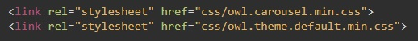
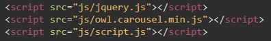
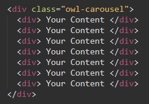
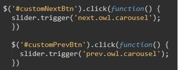
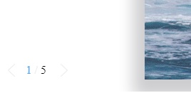
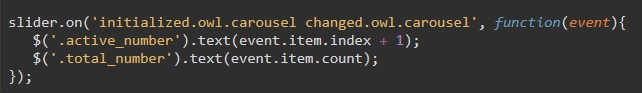

Вся информация о слайдере находится на сайте разработчика.
C сайта разработчика скачиваем архив. В архиве нам нужна папка dist. Из этой папки мы забираем файл owl.carousel (или еще лучше его сжатую версию - owl.carousel.min). Затем в этой же папке открываем папку assets и из нее забираем owl.carousel.min - это файл стилей слайдера. И owl.theme.default.min - это файл темы CSS слайдера.
Добвляем эти библиотеки в папку с проектом и прописываем их просто как обыкновенные библиотеки в але html. Так же для того что бы слайдер работал, нам понадобится библиотека JQuery.
В итоге должно выглядеть так:
CSS
Java Script
Здесь все просто
Подготавливаем область для слайдера задаем его размеры и в него помещаем блок с классом owl-carousel. Внутри этого блока расположены дочерние блоки внутрь которого помещаем разметку так как душе угодно. Один дочерний блок - это один слайд.
Для инициализации просто в нашем файле Java Script пишем тако код:
Разберем немного написанный код. Как только документ загрузится стартует функция в которой объявляется переменная, которая становится объектом элемента с классом owl-carousel, т.е. нашего блока в который мы поместили наши слайды. Затем к нашей переменной применяется функция owlCarousel которая инициализирует слайдер. Входящим параметром этой функции является массив, который задает параметры нашего слайдера. Вот некоторые элементы этого массива:
В верстке создаем либо кнопку, либо ссылку, которая будет переключать слайдер (ВАЖНО! если используем в качестве контрола ссылку в поле href указываем "#!" иначе если указать просто решетку то эта ссылка будет приводить в самый верх текущей страницы).
Далее нашим элементам контрола задаем идентификаторы. Например для кнопки NEXT - customNextBtn, а для кнопки PREV - customPrevBtn. Теперь все что остается это в наше функцию добавить вот так код:
При помощи библиотеки Jquery мы обращаемтся к нашим элементам, создаем обработчик событий на клик по элементу при котором вызывается функция. В этой функции к нашей переменной slider применяется метод triger входящим элементом которого становится событие либо next либо prev
Пример
После того как мы объявили нашу переменную, но перед тем как инициализировали слайдер надо добавить такой код:
На нашей переменной мы вызываем собитие методом "on", в скобках указываем два события initialized.owl.carousel - инициализация карусели и changed.owl.carousel - перелистывание слайда. Когда выполняются эти два события запускается функция с входным параметром event. Во время этой функции мы обращаемся к элементам верстки с классами active_number (элемент который отображает номер текущего слайда) и total_number (элемент который отображает общее количество слайдов). у этих элементов вызывается метод text, т.е. в эти элементы (теги) будет помещен текст. event.item.index - возвращает номер индекс текущего слайда (нумерация начинается с 0 поэтому добавляем + 1) event.item.count - возвращает длину массива со слайдами
Для того что бы количество отображаемых слайдов изменялось в зависимости от ширины экрана в свойства нашего слайдера в Java Script необходимо добавить такой код:
Т.е. от 0 и до 100 пикселей будет отображаться 1 слайд, а на экранах свыше 1000 пикселей будет отображаться три слайда
Пример
Первое что необходимо это в JavaScript, там где мы инициализировали слайдер добавить свойства: center: true,, при этом важно что бы текужее отображение слайдом items: было нечетное количество
Теперь в файле main.css добавляем следующие стили: